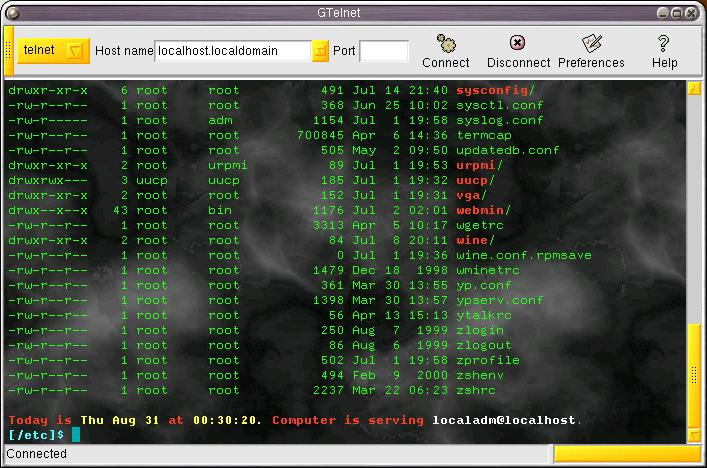

GTelnet
To connect to a remote host, do the following steps:
-
Select the connection type (telnet, ssh, or rlogin)
-
Enter the server name (e.g.: login.myworkplace.com)
-
Enter the port number you wish to connect (only necessary if you're trying
to connect to a different port number than the default)
-
Click "Connect" or hit Enter in the
host name entry box.
-
If you use SSH connection, you will be prompted for a user name. Enter
the user name and click "OK" button.
If you don't want to be prompted for username, just say "your_user_name@some_ssh_host.com"
and click Enter.
-
When you're done, you can click "Disconnect"

Home